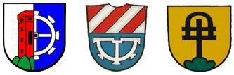

Familienname
Etziken
Generationen & Zweige
Vorgenerationen
Ersten fünf Generationen
Ansässiger Zweig
Schniders Viggis
Zweig der Sphinx
Amerikanischer Zweig
Meier-Eggenschwiler-Spillmann-Zweig
Renato-Zweig
Verwandtschaftliche Beziehungen
Wappen
Wappen von 1959
Wappen von 1893
Wappen von 1968
Organisatorisches
Kontakt
Quellen
Jahresberichte